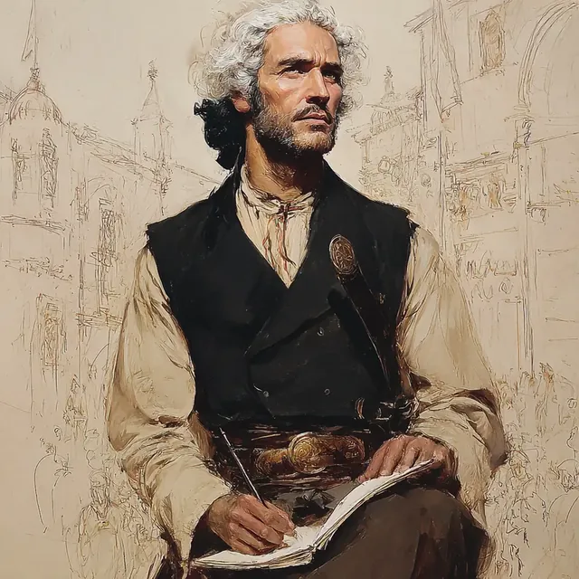

Jean-Zera Mongé, a half-elf bard and antiquarian, is a captivating figure whose charm and artistic flair are as plain in his person as in his dress — modern trousers and a dinner jacket worn, with studied ease, without a tie. His long, curling white hair lends him so ambiguous an aspect that a stranger is hard put to say whether the man before him stands in his late twenties or his late fifties. Reared amongst antiquities, and long at his father's side in the Egypt of the Napoleonic wars, Jean-Zera has bent his magical gifts to the service of that same calling.
At present he is to be found at a dig upon the Dardanelles, preparing to meet a British contact, one Frank Calvert — an errand of a piece with the dealings that bind him to his father's associates in Constantinople. At a dinner lately given by the Calvert family at Thymbra Farm, Jean-Zera moved amongst the guests with an easy grace, sketching the company and playing pieces upon the piano to gild the evening's humour. He fell into talk with General Patrice de MacMahon, professing a lively interest in an excavation that had brought to light a megaron — a civic hall of the ancient Greeks — and showed his amiable temper in his dealings with the children, to whom he made gifts of his sketches. Yet beneath the sociability ran a purpose: he was at pains to gather what he could of the dig, drawing out guest after guest, the notable Osman Hamdi Bay amongst them, whilst keeping about himself that air of intrigue and refinement his mixed history had lent him.
He is, besides, a scholarly occultist, esteemed for his command of arcane study and ancient history, and methodical in his enquiries, forever poring over some text or artifact with a sharp wit and a sharper curiosity. Jean-Zera marked the lingering transmutation magic that clung to a colour-drained tree, and gave his attention to old writings — among them a hidden scroll in ancient Greek entitled "The Lion's King", which he found to be flawed and miscopied in its parts. His searches carried him through a farmhouse and its grounds, where a loud report reached his ear and he made out the residue of magic; returning thither, he fetched cartographer's tools and won his way into a locked study, where lay a great body of research touching Troy. In a hidden compartment he came upon a spell scroll, and took besides a spare key from the desk; and he judged certain cave frescoes for their worth, knowing them older than the culture of the Greeks.
In an encounter with a Serpent Jean-Zera watched the creature's dealings with his companions and had his part in the debate upon the site's perils and mysteries. He sketched a magical ward set within a chamber and read its kinship with the spell discovered before. When Heinrich Schliemann would have forced a massive door, he counselled prudence and a return the better furnished; and he made a fair copy of the spell scroll before restoring the original to the study, keeping the key for himself. His learning has proved of no small use in the weighing of the relics the party recovered, for it was he who helped Rufus Dimitrious to know their significance and to see them sold to Osman Hamdi Bay.
He is drawn, too, into the political and social currents about him, and in particular into the debate upon the place of women in religious practice, being of a company that welcomes such discourse and counting influential men his friends, Osman Hamdi Bay amongst them. Bent upon recovering a stolen journal of no small consequence, Jean-Zera commands magic to his purpose — the spell of Detect Magic, and Illusory Script for the discreet carrying of word. He bore an active part in the passing of power upon the death of The Caliph, his interest fixed upon the stolen journal and its magical import. In the pursuit of it he delivered a sealed letter to Ahra "the Wolf", a leader of the Janissaries, and made his way into the workings of the criminal orders; he composed a ciphered report to his father in Illusory Script, that his news might travel unread; and, observant of the meaner streets, he watched and followed a suspect fellow who offered lodging to a homeless man, his care running always to the safety of his quarter.
When matters grow tense he has the gift of melting into his surroundings, all stealth and cunning. Against an albasti — a night-hag of the old country — he loosed Dissonant Whispers, dealing a mind's anguish to her human helper and driving the man to flight; and he called upon Healing Word to raise his ally Ahmet, who came to his senses weak but living. Careful to take the measure of a threat before he strikes, he whispered his encouragement to Ahmet all the while. After the business of the albasti he betook himself to Digadas' library, seeking what might be learned of cursed sleep and the afflictions of magic.
At a clandestine gambling club Jean-Zera was seen in the company of Gizem Faruki, who had put on the male persona "Gizem Faruki", so that the pair were taken by the room for partners. His dress and bearing bespoke a man at ease amidst the club's mixed society — older, cosmopolitan gentlemen and a certain notable Frenchwoman — the place all lush furnishing, card-tables, and a board for backgammon, an air of refinement and of contest over all. There he entered into the currents of the play, watching the game and keeping himself attentive to every exchange about him.
After a tense hand at high stakes he was drawn into a scuffle when an attempt was made to carry off Chique Manu. He closed to grips and dealt the assailant, one Rashad, blow upon blow with his bare hands; and though a rash manoeuvre cost him hurt, he fought on until he had laid Rashad senseless and won Chique Manu free. In the Undercity he showed his care for his fellows, buying healing potions against the party's need.
Threading the disorder of the Undercity in search of a buyer for a curious book concerning himself, Jean-Zera's sharp eye caught a Frank at his pocket in a crowded alley. He had dealings with divers creatures — an Ejder, an Elvish Woman, and a dwarf chieftain called Mr. Karen; and when muggers set upon the company he spoke Unsettling Words and cast Dissonant Whispers upon the Ejder, staggering it with pain. An Orc Brute felled him senseless as he sought to shift his ground, but a Tiefling Caster steadied him, and once recovered he shared out a heavy purse taken from Mr. Karen amongst the children in the dwarf's keeping, and, facing down that same troublesome Frank, disarmed him and reclaimed the coin for the young ones.
Of late he has shown himself a knife-fighter of exact and deadly craft. He has come away from his battles clad in the wreckage of undead foes, spreading confusion and dread. Meeting an Undead Priest, he opened the thing with two precise strokes that spilled its bowels and ended it; then, passing Sidra al-Najjar on his way from the room, he flicked the gore from his blade against the wall to cow the armed men present — one of whom, taking him for a walking corpse, fired and wounded him. He would neither kneel nor give up his knife, but answered by driving his elbows into two of the escort to bar their way.
In the battles that followed his prowess held. He met swarms of scorpions and put them down with dagger and fist, turned aside the venomous sting of one that had grappled him, and cut down the broodmother; and he told upon foe after foe — a Mounted Warrior and a Janissaries among them — lending his hand to the undoing of the guardians the company encountered. His wit and resource are of a piece with his blade, and he bends whatever lies about him to the gathering of knowledge and the managing of a delicate room. He is reckoned a creature of Osman's, that great figure of the local power, and his dealings have drawn the notice of sundry factions, that styled "A Certain Community" not least. He carries one of two uncursed Magical Short Swords (+1) lifted from a hoard, a token of his readiness for a quarrel.
Not long since Jean-Zera was accosted by well-dressed men who pressed him upon his connexion to Osman and to Giannis, setting a hidden pistol to his ribs and bidding him come along. He felt one of them probe his mind to try his standing as a foreigner at law; yet he kept his composure, and with the quiet help of Sidra — who cast Guidance and opened a Message between them — he came through, her charm working upon the lead agent's senses so that he might slip away.
Afterward he found himself in a carriage beside an older man, the head of the "A Certain Community" apparatus, who pressed him to sway Osman from certain doings held to trouble the Empire's harmony. The official demanded silence upon their talk and let fall the name of Kavalan Pasha, with dark hints of deeper toils about Jean-Zera's own family. Setting down near Giannis's gate, he gave the slip to the guards and a follower alike; and he took a disguise at the Shapeshifter, remaking his aspect into that of a Turk against his coming needs.
In his late doings Jean-Zera has borne himself with a tactician's care and caution. He is a close observer of soldiers' uniforms, remarking that they may be new-made to counterfeit age, or true surplus of the stores; and his analytic turn showed plain when, examining a journal, he made out an intricate cipher wound about with a ward or glamour, such that no small skill or magic would serve to break it. He spoke with Alemdar Mustafa Pasha of a common front that might be raised against adversaries unnamed; and though aware of being followed, he kept his own counsel. Nor is he ungenerous: he laid Lesser Restoration upon Shehrazat, a young tiefling wasting with blood-rot, and spoke of finding her a tutor by whom she might master her inborn magic.
Of late he attended the spectral chariot-races of the Hippodrome in the company of Yasmine, a contact but little versed in the Undercity. There he conversed with Chique Manu, a wealthy bookmaker, of wagers and of society; marked the Green Team's showing and the faltering of a ghostly horse that spoiled their finish; and, contriving a staged diversion, drew Chique Manu off that he might disengage from him. When the race was run he sought an introduction to an elven woman he had seen whispering at Chique Manu's ear, and Chique Manu agreed to bring it about.
Later he called at Osman's Library to hunt for records of the Hippodrome and its rigged racing, but found little to his purpose; and he laid a plan to pass a forged journal quietly to Aziz, that his allies might not be drawn into blame. Throughout he kept a keen interest in the politics of the Undercity and the workings of the phantom races.
As one of a party charged to name an assassin known as the Kavalan Of Egypt, Jean-Zera brought his magic to the field — Chill Touch and Vicious Mockery — and his gift for strategy to their councils. He tried a reinforced door and, essaying to enter, sprang an arrow-trap that struck a companion; against a Desiccated Undead he loosed Chill Touch to hamper its next stroke; and with unnerving words he forced back a Janissaries defector named Alexander in a tense standoff, helping to bring him down without killing. That done, he saw Alexander to a safe lodging in the Undercity, and gave himself to study of the Janissaries and the Sekban, marking the turn toward modern arms under the Potasha’s Line. He arranged a meeting with the assassin's representative at The Pearl, proposing a decoy to draw the eye from the true mark, and used a Memory-Wipe Scroll to wipe the man's memory of their talk, that the errand might go forward unhindered.
More lately Jean-Zera has carried a square of stout paper marked with an ornate sigil or monogram, such as a signet ring might bear. He is seized with dread concerning it, fearing it lost or taken; in a dream he knew the sigil for a mark of his own identity, to be set upon his possessions; and the morning after he sketched it from memory into a passable likeness. Whilst searching Osman Hamdi Bey's library he examined a desk, found a trapped latch, and opened a secret compartment, wherein lay a folded and sealed letter under Osman's own seal. Addressed to "my dear friends", it told that Osman was in all likelihood dead and made over his manor and its secrets to the party. In a later fray he turned his magic upon shadowy, half-bodied soldiers, employing a chill spectral force and enchanted bolts to unmake some of them.
Beyond all this he is the party's own spellcaster. Jean-Zera has worked Mage Hand many times over; knew a French inscription for the mark of Petrus Gyllius; attuned to a recovered hand drum and played upon it through a short rest; and named a recovered scroll for a scroll of Greater Restoration. He talked the cistern guards into letting the group by, detected abjuration upon a hanging burlap bag, tugged it with Mage Hand and hauled it up; retrieved two Lydian gold coins by the same art; read Petrus Gyllius's diary; and essayed a psychic stroke upon a Merrow that shrugged it off. A thrown stone caught him in the back of the head; he fell into spiked water at a crossing and climbed out upon the far side; he called up a swarm of secretary birds about a Medusa, took a wound from her ranged attack, and used Mage Hand to work a cursed keyring and open a cell in safety. A second cursed lock he sprang burst upon him, searing him and Miray both, whereupon he shut and made fast the door and fought to beat out the fire that clung to him.